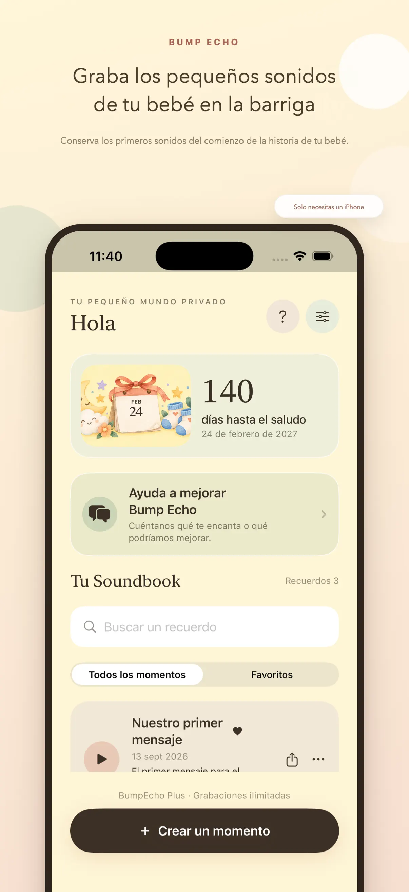
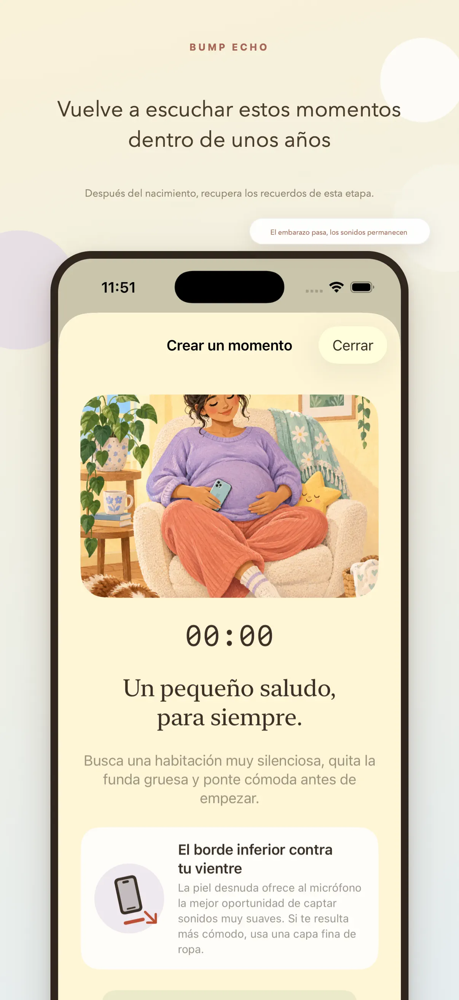
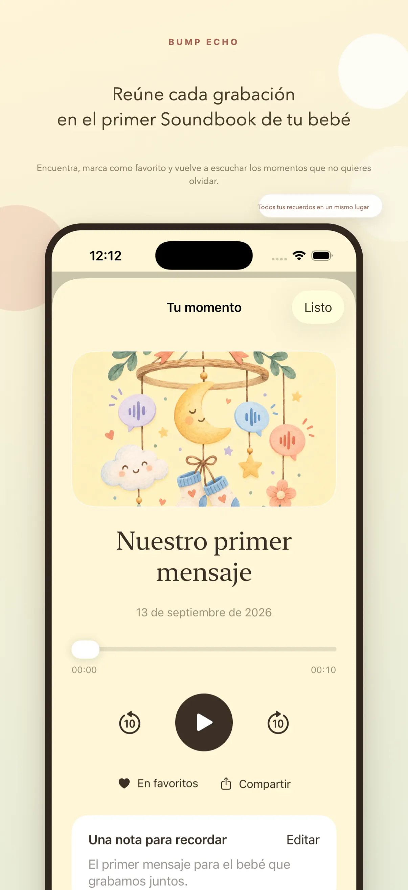

Mensajes con voz
Graba historias y palabras tal como suenan hoy.
 Bump Echo
Bump EchoFamilia y recuerdos
Crea un Soundbook privado con mensajes, fotos y momentos para compartirlos algún día con tu bebé.
Descargar en el App StoreDiseñada para iPhone · Por Kestora Labs


Hecha para una función clara
Graba historias y palabras tal como suenan hoy.
Reúne fotos y recuerdos del embarazo en orden.
Un espacio íntimo diseñado alrededor de tu historia.
En tu día a día
Graba historias y palabras tal como suenan hoy. Reúne fotos y recuerdos del embarazo en orden.

Tú decides qué contenido crear y compartir. Evita incluir información de terceros sin su permiso.